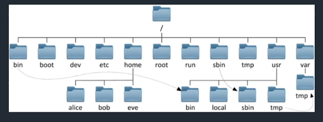
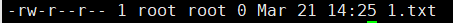

运维学习笔记
ip
普通ip，分为两段
网络地址+主机地址
如192.168.0.135
192.168.0这部分叫做局域网段
135叫做主机地址
每一个机器，会有三种ip形式
- 127.0.0.1 回环地址（特殊ip，系统自带）做服务器测试使用的
- 0.0.0.0
- 网卡地址（用户自己分配的ip）
特殊ip：0.0.0.0（系统自带，会绑定所有的网卡） 作用：当程序部署在这个地址上，即表示，绑定机器所有的网卡，包括127.0.0.1以及其他的ip
想让程序让其他人访问到，必须要绑定网卡
非网卡的绑定就访问不了，比如127.0.0.1
ip地址是会变的。
任何连上互联网的电脑都可以通过一个公共ip访问到
公网ip：所有人都可以访问的
内网ip：
内网：一般情况下，内网就是指的局域网（LAN），公网就是指的广域网（WAN）
域名
域名的作用就是绑定难以记住的ip地址，让用户好记。
DNS就是域名映射系统
CDN服务器加速–让访问者可以就近访问到服务器
路由器–网络地址映射–NAT（网络地址转换）
局域网–>公网
NAT可以让虚拟机也可以上外网，NAT是一个地址映射表，作用呢，就是比桥接可以分配更多的局域网ip，桥接是和宿主用的同一个ip，而使用NAT创建的虚拟机使用的是宿主机又分配的ip地址，其他电脑是访问不了这个虚拟机的。
浏览器直接访问taobao.com与www.taobao.com的区别
这个是运维配置的域名重写机制，淘宝服务器自动判断，用户只要访问的是taobao.com
自动url重写机制，nginx部署的功能
域名是从右往左读。
顶级域名用于告诉用户该域名提供的服务类型
顶级域名就是最后一个小数点.结尾的字母，如.net,.com
用户花钱买的域名就叫二级域名
域名可以是在公网中解析到的
也可以是企业内部自己用的
端口
端口就是ip:port 。
1 | 80端口是和443绑定在一起的。80是http端口,443是https端口 |
1 | 判断网站是否存活 |
Linux分区
- /boot，启动分区，系统的引导启动程序，必须放在这里
Linux命令
window不区分大小写，linux是严格区分大小写的
linux是不关心后缀的，linux的文件属性是依靠权限位决定的，和文件名无关。
linux的文件名就是个普通的字符串而已，一堆英文字母
看到权限位中第一个是-，就是文件，如果是d开头的，就是目录
压缩文件也是普通文件显示
- echo 显示一段话或者输出一段字符串
- touch 创建文件
linux上一切皆文件
- systemctl linux服务管理命令 status 状态 network 网络
- /是linux的根目录
- sda是linux上的第一块硬盘
linux是否是可执行文件是通过文件属性决定的
linux上硬盘想要用有3步：
- 有物理磁盘，分区
- 在linux上有一个目录，和这个分区绑定
- 访问这个目录，即访问了这个磁盘的数据
文件目录结构
一进来的目录就是/root，可以用pwd命令显示当前目录
1 | linux以单根的方式组织文件/ |

/bin
是Binary的缩写，这个目录存放着最经常使用的命令，这个文件是个链接，实际是指向usr/bin
sbin
跟bin类似，也是放着系统命令，只有超级用户才可以执行
lib
等同于windows的system32文件夹，放着一些函数库
lib64
与lib差不多
/boot
引导启动的一些文件，如内核文件和启动引导程序（grub），很少动
/dev
存放系统的硬件设备文件
etc
放置系统的配置文件，经常用，采用默认安装方式（rpm安装）的配置文件都在这
root
除了有root管理员权限的才能进入。别人进不去
home
存放每个用户的文件
tmp
放临时文件的文件夹
usr
安装软件的路径
var
跟tmp类似，里面有个/var/log，放了日志文件
mnt
挂载硬盘时的挂载点
opt
/opt 目录用来安装附加软件包，是用户级的程序目录，可以理解为 D:/Software。
centos7默认用xfs文件系统
文件管理
文件类型
前面是-的，为文件
前面为d（directory的缩写）的，是目录
文件管理命令
格式：命令 [选项] 参数
ls -l 以列表形式显示文件的详细信息
- ls -a 把隐藏文件也显示出来
pwd 打印当前路径
touch 创建文件
mkdir 创建目录
参数有 -p,父系，当创建目录没有上一级时，自动创建
- -v,每次创建新目录都显示信息
cp 源文件路径 目标文件夹 用于复制文件
参数-r, 用于把一个包含很多文件的文件夹复制到目标路径下
- mv 源文件路径 目标文件路径 用于移动文件也可以用来改名
rm -rf 删除文件
参数-rf是强制删除，慎用！！！
要删除指定的多个有共性的文件可以用通配符删除
- cat 查看文件内容
- head -数字 查看文件前几行内容
- more 有翻页功能，查看的文件内容不多的话和cat功能一样
- tail -数字 查看文件后几行内容
- grep 要查看的关键字 要查看的文件 ， 用于搜索关键字
- su - 用户名 切换用户命令，加-为了提权
- tty 查看当前终端名字
修改文件内容
重定向
用>进行重定向
文件编辑器1
图形文件编辑器 gedit，给文件写东西
文件编辑器2
vi、vim。推荐用vim，有高亮功能，按yy之后按p表示复制粘贴，按dd表示删除，3yy表示复制3行，按u表示撤销
按v进入可视化模式，可以进行选取
gg G 用于页首页尾 ， 3G进入第三行
/后面可以接需要找的字符串，按n选下一个
保存退出
：w保存
：q退出
：wq保存并退出
加！是强制执行的意思
查找替换
：范围 s/原内容/新内容/全局
如 ：1,5 s/root/qianfeng/g 从1-5的root替换成qianfeng
设置环境
：set nu 设置行号
：set list 显示控制字符
：set nonu 取消设置行号
临时文件
.swap格式的文件，是服务器给我们的备份，一般是写数据进入文件没有保存意外关闭了就会有这种格式的文件，解决方法如下：
查看隐藏文件
使用rm删除它即可
隐藏文件直接rm -rf /*是删不掉的，要指定文件名字删除
用户管理
用户和组的基本概念和作用
用户基本信息文件：/etc目录下的passwd文件
文件里面中每一行都是分成了7列，用：分割开，如：
root：x：0：0：root：/root：/bin/bash, 对应如下;
用户名：x：uid：gid：描述：HOME：shell
root：用户名：登录系统的名字
x：密码占位符，具体内容不在着里
0：UID：用户的身份证号
0：GID：GROUP组号
root：描述：比如经理manage
/root：家目录：登录系统时，所在的目录
/bin/bash：登录shell：命令解释器
系统约定：RHEL7
uid：0 特权用户
uid：1~499 系统用户
uid 1000+ 普通用户
用户密码信息文件:/etc/shadow
里面存储是用户的密码信息，这里的密码一般是加密过的。对称性密码是可以破解的，非对称性密码不可以
1 | 1）“登录名”是与/etc/passwd文件中的登录名相一致的用户账号 |
组信息文件：/etc/group（了解即可）
root：x：0：
组名：组密码：组ID：组成员
1 | shell 中文叫壳 |
用户管理
添加用户
1
useradd 用户名 -用户创建命令
查询用户
1
id 用户名 -查询用户命令
修改用户密码
1
passwd 用户名 -修改用户密码命令
删除用户
1
userdel -r 用户名 -删除用户,参数r表示连家用户一块删了
修改用户属性
1
2
3
4usermod -s 用户名 -修改用户属性命令
如：usermod -s /sbin/nologin user01，意思是修改user01这个账号，禁止它登录
参数 -g 修改用户基本组
参数 -G 修改用户附加组
用户组管理
组添加命令
1
groupadd 组名 —创建组
组删除命令
1
groupdel 组名 -删除组
查询组
1 | 可以用grep命令，如 grep new01 /etc/group |
将用户从组中移除
1
2gpasswd -d 用户A 组名B
表示将用户A从B组中移出修改组
1
groupmod -g gid 组名A -将A组的gid改
组的类型
基本组
1
随用户而创建，组名同用户名
用户的基本组
附加组
1
用户加入其他的组就是附加组
组的存在是为了方便用户与文件之间权限的关系，如用户访问文件需要有文件的访问权限，如果有多个文件，那么用户就需要有多个文件的权限，对用户访问文件授权较为麻烦，这时就可以之间对组进行授权，而用户只需要加入这个组就会拥有这个组所拥有的权限，假如不需要这个用户了，直接把用户从这个组移除，那么这个用户就没有了这个组所拥有的权限。
提权（了解即可）
- 提权方法：su
- 提权方法2：sudo（临时提权）
- 使用普通用户登录服务器时。
- 完成部分特权指令
在/etc/sudoers文件中记录了权限记录。
里面的第107行有wheel。
用户的权限
权限的三类对象UGO
属主：u
属组：g
其他人：o
特殊对象：所有人：a（u+g+o）
权限的三种类型
- 读：r=4
- 写：w=2
- 执行：x=1
设置权限
使用符号授权：u用户 g组 o其他 r读 w写 x执行
语法：chmod 对象（u/g/o/a)赋值符（+/-/=)权限类型（r/w/x） 文件/目录
- chmod u+r 1. txt
命令 对象加减权限 文件或目录

1 | -rw-r--r-- 2 root root 0 Mar 21 14:25 1.txt |
使用数字授权
如 chmod 777 file.txt
7是4（读）+2（写）+1（执行）得来，0就是啥权限都没有
改变属主
chown ：设置一个文件属于谁，属主
语法： chown 用户名.组名 文件
想改文件夹的权限是和改文件的操作一样的
当然，若还想改文件夹下的所有文件跟文件夹一样，那可以加一个-R参数。代表递归
ACL –限制用户对文件的访问
ACL是UGO的补充，或者说是加强版
ACL文件权限管理：设置不同用户，不同的基本权限（r、w、x）。对象数量不同
UGO设置基本权限：只能一个用户，一个组和其他人
1
2
3
4
5
6
7
8
9语法：
setfacl -m g：hr：rwx /home/file 设置文件访控
-设置 对象：对象名：权限 文件名
getfacl ----查看
setfacl -x -g（u/o）：hr /home/file 删除权限
-设置 对象：对象名 文件名
另外setfacl还有一个参数-b,可以直接移除所有附加权限。特殊权限
如果一个重要文件被超级用户删除了，这时候需要靠特殊的i权限
- 特殊位suid
1
2
3
4
5suid，（sgid）针对文件/程序时，具有临时提升权限
suid是针对文件所设置的一个特别的权限
功能：使调用文件的用户，临时具备属主的能力
例如：chmod u+s /usr/bin/cat
以root身份为cat命令授予suid执行位，当其他普通用户使用cat时，临时有root的能力文件属性chattr
1
2用途：常用于锁定某个文件，拒绝修改
加参数i，使用户对文件无法删除、修改、移动。进程掩码umask
1
2
3
4目录的默认权限是755。
755是0777-0022得来的
文件的默认权限是644。0666是系统为了安全，所以在创建文件时把执行权限去掉了。
644是0666-0022得来的，
系统创建文件的时候默认权限是644，文件夹权限是755